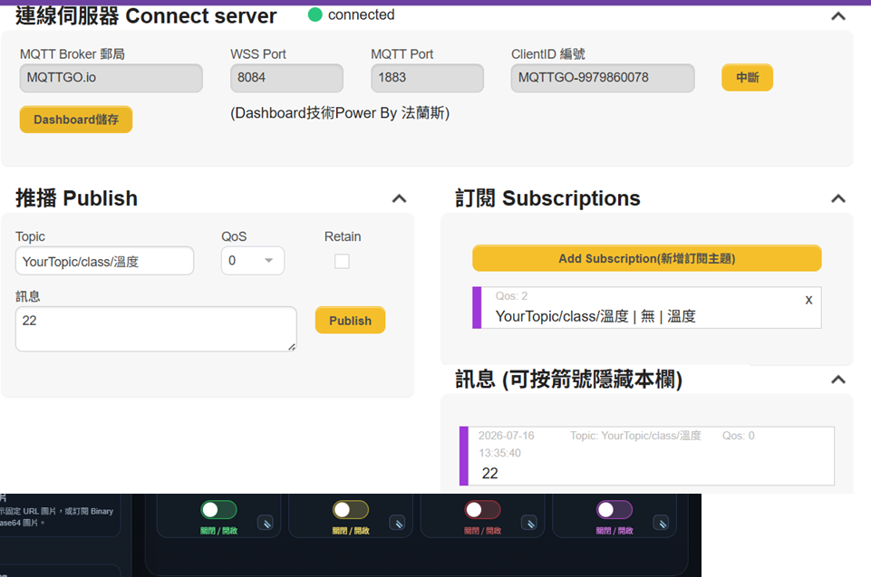

PCB 電路板設計
認識電源、訊號、接地與模組化佈線，建立可靠的硬體基礎。
SCHEMATIC · PCB · HARDWAREFINAL PROJECT · IoT ENERGY MONITORING
以 ESP32 為核心，串接智慧電表、MQTT、手機 APP、環境資料、即時影像與 Node-RED 儀表板，完成一套可觀測、可控制的物聯網能源系統。
01 · SYSTEM OVERVIEW
系統採分層設計：ESP32 負責現場資料採集與控制，MQTT 負責可靠傳輸，Node-RED 整合多源資訊並提供儀表板與自動化流程。
02 · PROJECT CHAPTERS
從電路設計、韌體基礎一路走到資料視覺化與智慧能源應用。
認識電源、訊號、接地與模組化佈線，建立可靠的硬體基礎。
SCHEMATIC · PCB · HARDWARE從 GPIO、PWM、I²C、OLED 到 Wi-Fi，掌握微控制器開發核心。
GPIO · OLED · SENSOR以發布／訂閱模型連接手機 APP，實現即時狀態回報與遠端控制。
WI-FI · MQTT · APP整合溫濕度與外部公開資料，讓能源數據擁有環境脈絡。
DHT · API · OPEN DATA透過 ESP32-CAM 建立即時影像服務，補足遠端觀測視角。
ESP32-CAM · STREAM讀取電壓、電流、功率與累積電量，將用電行為轉成可分析資料。
ENERGY · POWER · METER以流程節點串接資料、警示與圖表，打造一站式監控介面。
FLOW · DASHBOARD · ALERT03 · FIELD RESULTS
紀錄硬體組裝、OLED 顯示、影像串流與實測階段，保留每一步的學習痕跡。


04 · QUICK START
完整程式碼、硬體腳位、MQTT Topic 與設定方式都已整理在 GitHub。
git clone ...secrets.example.h20_oled_show